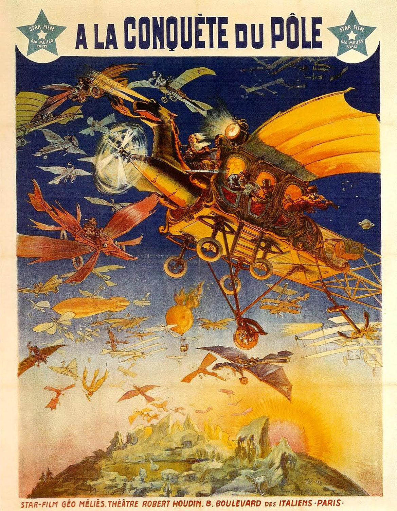

O site oficial de Georges Méliès
Este site convida-o a conhecer a vida e obra do criador do espetáculo cinematográfico, Georges Méliès (1861-1938). Seu filme mais famoso "Le Voyage dans la Lune" (1902) foi o primeiro filme a ser listado como Patrimônio Mundial da UNESCO em 2002.

Georges Méliès, apaixonado por magia, assumiu o teatro Robert-Houdin em 1888, onde criou muitas grandes ilusões. Mas foi em 1896 que ele deu à luz sua melhor ilusão ao produzir suas “vistas animadas” para projetá-las em seu teatro e depois vendê-las para cinemas de feiras. Inventor dos efeitos especiais cinematográficos em 1896, realizou mais de 520 filmes entre 1896 e 1913.
Descubra através deste site a fascinante vida deste pioneiro do cinema, a sua obra e documentos raros. A nossa associação, criada em 1961, conta atualmente com inúmeros arquivos e mais de 200 filmes de Georges Méliès. Também organizamos concertos e conferências de cinema em todo o mundo há mais de 50 anos.
